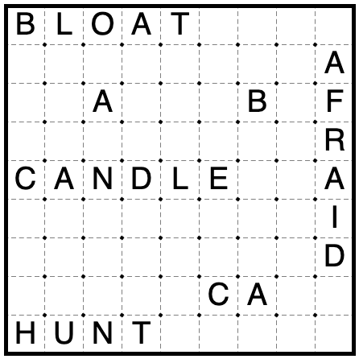
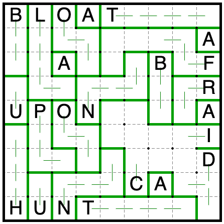

Solution: Locally Operating Globally Interconnected Computers
Answer: CANDLE→FLUE
QUAYD→CORD
SLOAN→OUTRO
UPON→CONTROL
Written by Jonah Ostroff
This puzzle is a NIKOJI logic puzzle, except most of the givens are provided by either the input word, or outputs from the other three puzzles.
Most teams won’t make much progress on this puzzle until the three feeding outputs LIST(lover), CLUES(born), and EMPTY(frayed) are solved. (It is possible to use it earlier to help backsolve LIST(lover), or constrain the output of CLUES(born), but we expect few teams to do this.)
Once the givens are identified, there are four NIKOJI puzzles to solve:

The logical paths are given in the Appendix. The solutions are as follows:
Finally, follow the extraction steps to produce an answer: read the letters in the regions marked by b1 through b11, skipping those where the edges a1 through a11 are covered by a border.
| Puzzle | Input | Output |
|---|---|---|
| CLUES | CANDLE | FLUE |
| LIST | SLOAN | OUTRO |
| Meta I | QUAYD | CORD |
| Meta II | UPON | CONTROL |
Appendix: Logic puzzle solution steps
LOGIC(candle):
First, add all of the automatic region borders and copy them over to other copies of the same letters.
Since A is the 1x1 region, every other region must extend to at least one more square.
This is the trickiest step: if the C extends downwards, then the T is of size 2, and every other region must have size
at least 3. The C and U would cut off the H at size 3, and then the B and L would extend to size 4 and have the same shape.
So the C doesn’t extend downward.
Okay, maybe this is the trickiest step: the B, L, and C have a total size of 9, so they must comprise one region
each of sizes 2, 3, and 4. That means every other region has size at least 3. Furthermore, if the size 3 region in the upper
left is an L-triomino, then the B or L region would have to bend, which they don’t have room to do at their other
spots in the grid. So no shape besides B, L, or C can be a domino or I-triomino.
If C is the domino, then the B and L regions elsewhere in the grid cause the N and R to be the same shape. Similarly,
if L is the domino, then the B and C regions elsewhere in the grid cause the R and I to have the same shape. So B is the
domino.
Now we can resolve the rest of the grid by avoiding shapes we’ve already made.
LOGIC(sloan):
First, add all of the automatic region borders and copy them over to other copies of the same letters.
Since A is the 1x1 region, every other region must extend to at least one more square.
The L and U in the bottom of the grid are fighting for their third square. Whichever one takes it will force the other
to be of size 2, so every region besides L and U must have size at least 3.
Now that the B is size 3, the larger of L or U must be size at least 4, but only U has room to grow that much. This
(plus a bunch of quicker deductions) completes most of the grid.
Now there’s only one way to complete the C, I, and D without repeating a shape.
LOGIC(quayd):
First, add all of the automatic region borders and copy them over to other copies of the same letters.

Since A is the 1x1 region, every other region must extend to at least one more square.

The L and U are again fighting: only one can have size greater than 2, so the other regions must have size at least 3.
The B then extends to force the Q down, and the H cuts the U off at size 2.
If the N extends upwards, then the Q and H would have the same shape. So it goes to the right, which forces the C to
extend up, which means the I is an S-tetromino. The N must fill the rest of its available space to avoid repeating a shape.

Now the C, O, and Y must grow by at least 1, 2, and 2 spaces to avoid repeating a shape already in the grid. That eats
up all the available extra room, completing the upper half of the grid and resolving the ambiguity between the Q and H.
LOGIC(upon):
First, add all of the automatic region borders and copy them over to other copies of the same letters.
Since A is the 1x1 region, every other region must extend to at least one more square.
Now it’s the B and U that are conflicting. One will be the domino, one will be the I-triomino, and all other
regions must have size at least 3.
Now the U in the bottom can’t extend without causing the P or H to repeat a shape. So U is the domino, and B is
the I-triomino.
If the N’s arm extends to the space above it, R3C4 can’t be filled. So N extends to the right instead.
Now R3C4 can’t be filled by the F, or O and N would have the same shape. So it’s part of the O. This
resolves the rest of the upper part of the grid.

There’s only one way to split the remaining cells between the I, C, and D without repeating a shape.